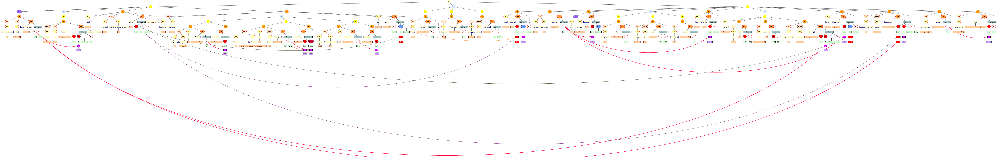

Projekt B11:
Semantische Rollen, Kasusrelationen und satzübergreifende Referenz
im
Tibetischen
|
||
|
||
|
||
|
||
|
||
|
||
|
||
|
Leiter 
| Prof.
Dr. Klaus Butzenberger Seminar für Indologie und Vergleichende Religionswissenschaft Universität Tübingen Gartenstr. 19 72074 Tübingen |
Prof. Dr. Marga Reis
(kommissarisch) Deutsches Seminar Universität Tübingen Wilhelmstraße 50 72074 Tübingen |
| Tel.: +49/7071/29-76741 Fax: +49/7071/29-5321 E-Post: mer AT uni-tuebingen.de |
Projektmitarbeiter
| Dorothee Börner (2006-2008) Nathan W. Hill (2005-2006) Fabian Kliebhan (2007-2008) Kristin Meier (2002-2004) Frank Müller-Witte (2006-2008) Nicola Westermann (2005) Bettina Zeisler (2002-2008) E-Post: zeis AT uni-tuebingen.de |
|
| beratend: Rebecca Norman (SECMOL, Students' Educational and Cultural Movement of Ladakh, Leh-Ladakh 194101, Indien) Namgyal Nyima (Zentralasiatisches Seminar, Universität Bonn) Thupten Kunga Chasab (Uniwersytet Warszawski) Alle an der Feldforschung in Ladakh beteiligten Personen werden auf der separaten Seite people in the field aufgelistet. |
|
Ziel
Im Mittelpunkt des Projekts steht auch in der zweiten Phase die Formulierung von Regeln für die Identifikation von Antezedentien leerer Argumente im Tibetischen. Hierzu ist im einzelnen auf die Verbsemantik einzugehen, d.h. auf die Argument- und Ereignisstruktur der Verben, auf die Einteilung der Verben nach ihrer Aktorenart ([±Kontrolle]) sowie auf Probleme der Ergativkonstruktion und Detailfragen der Morphologie des tibetischen Verbums. In diesem Zusammenhang ist damit zu rechnen, daß sich syntaktische, pragmatische und semantische Regelsysteme für die Identifikation ergeben, die im Sinne einer optimalitätstheoretischen Syntax gewichtet werden können. Angestrebt ist mithin die Aufstellung von Regelsystemen bei satzübergreifender Referenz für das Alttibetische (Mitte 7. bis Ende 10. Jh.), das klassische Tibetische (11.-19. Jh.) sowie für das moderne Westtibetische, das in Ladakh (Indien) und Baltistan (Pakistan) gesprochen wird. Dabei werden die Kategorien der semantischen Rollen und der semantisch-syntaktischen Kasusrelationen nun nicht mehr nur intuitiv, sondern auf der Grundlage des in der ersten Phase erstellten Valenzwörterbuches der Verben des Ladakhi festgelegt. Umgekehrt wird erwartet, daß die Untersuchung der Referenzbeziehungen dazu beiträgt, die semantischen, syntaktischen und pragmatischen Kategorien genauer abzugrenzen.Die Perspektive des Projekts ist primär eine empirische und deskriptive, sekundär eine allgemein vergleichende und theoretische. Das Projekt basiert auf der Auswertung der zu erstellenden Textkorpora schriftlicher und mündlicher Erzählliteratur verschiedener Epochen, der Auswertung der durch Befragung und Elizitation gewonnen Daten sowie auf der einheimischen grammatischen Literatur. Durch die verschiedenen Datenklassen (Korpusdaten, Beurteilungsdaten, Elizitationsdaten, deskriptive historische und rezente Daten sowie normative Daten tibetischer Grammatiker) und durch die Zusammenführung verschiedener methodischer Ansätze (Philologie, Linguistik, historische Sprachwissenschaft und einheimische tibetische Grammatik) trägt das Projekt zur Leitfrage des SFBs bei: der Klärung des Verhältnisses von Theorie und Empirie im Hinblick auf unterschiedliche Datentypen und deren Bewertung.
Weitere Details finden Sie in unserem Projektantrag 2. Phase (als .pdf-Datei)
Annotation
DokumentationDefinitionen
Textkorpora
|

Zahlen& mehr |
|
Publikationen
Feldforschung
Beteiligte (Erzähler und Informanten)einige besondere Ergebnisse:
-
 Steinblumen
oder
ein spracharchäologischer Exkurs (in ladakhi phalskat und
englisch):
Steinblumen
oder
ein spracharchäologischer Exkurs (in ladakhi phalskat und
englisch):
"Language change and the fossilization of the Old Tibetan b- prefix in Ladakhi and Balti." Paper presented at the 12th Colloquium of the International Association for Ladakh, Kargil (Ladakh), 12-15th July 2005.
- Kenhat, eine Dialektgruppe aus Oberladakh (auf Englisch)
- Überblick zu den Satzbauplänen (auf Englisch)
- Einführung zum Valenzwörterbuch
der
Verben im Ladakhi (auf Englisch)
-
kuʃunaŋ trakuʃu (apples and peaches) – on the comparison of comparative expressions in structurally differing languages
Gestaltung: Christoph Singer. Verantwortlich für den Inhalt und Ansprechpartner: B. Zeisler. Zuletzt geändert am 08.04.2009